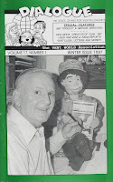

Dick White, Ventriloquist, Cartoonist, Figure Maker
2/26/2011
{kind=link}

Dick White says he was about 12 years old when his father took him to a circus where a ventriloquist was one of the acts, and from that point on, he was totally fascinated with the art form. An artist and carver himself, he never bought a dummy in his career, but always made his own.
In an article Dick wrote for the winter 1997 issue of Dialogue magazine, Dick recounted this humorous story:
"One of my figures was 'lost to love'. I had loaned him to a girl friend, but then later decided not to marry the girl. She left in a huff, and she kept 'the kid'. Oh, how I begged for his return but my old girl friend said, 'No, I love him as much as you do!' I sure hope she is taking good care of him. To this day I still miss that dummy ... the wooden one!"
Many ventriloquists have enjoyed the art and humor of Dick White via his clever cartoons in vent publications including Dialogue magazine and Newsy Vents. Parkinson's claimed Dick on Sept, 8, 2010 at the age of 83. While Dick is no longer with us, he has left us with many reasons to keep smiling.
The 1997 issue of Dialogue shown here is being awarded today to: Mark Lewis